Rusutsu
Rusutsu · Hokkaido
Rusutsu
Highlighted on the Hokkaido map.
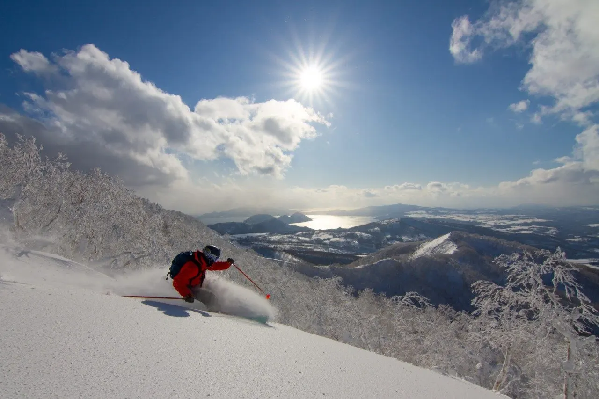
Stay
ウェスティン ルスツリゾート
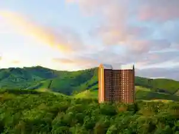
Uesutein Rusutsurizooto
RUSUTSU LODGES - LILLA HUSET
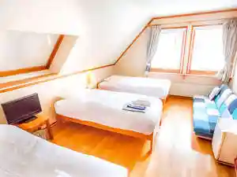
Rusutsu Lodges - Lilla Huset
ルスツリゾートホテル＆コンベンション
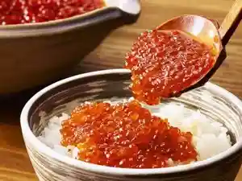
Rusutsurizootohoteru & Konbenshon
ザ・ヴェール・ルスツ
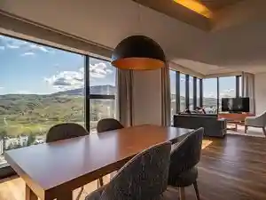
Za Veeru Rusutsu
ＹＯＵＴＥＩ
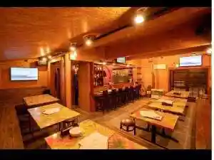
Y O U T E I
翠葉 ルスツ
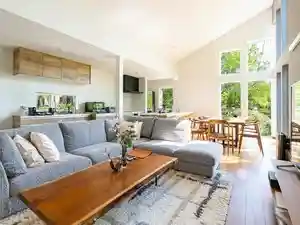
Sui Ha Rusutsu
ルスツヒルズノーザンリッジ
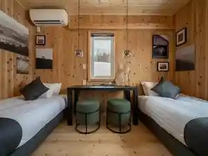
Rusutsuhiruzunoozanrijji
ルスツヒルズセントロ
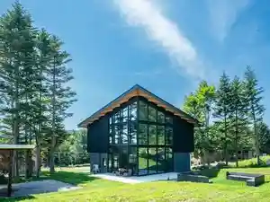
Rusutsuhiruzusentoro
Villa Rusutsu
Villa Rusutsu
ジャパビスタ ルスツ
Japabisuta Rusutsu
ノア ルスツ
Noa Rusutsu
Dining
ルスツ酒場
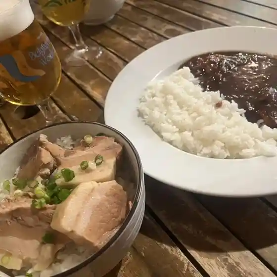
Rusutsu Sakaba
そば・酒・炭火 源べえ
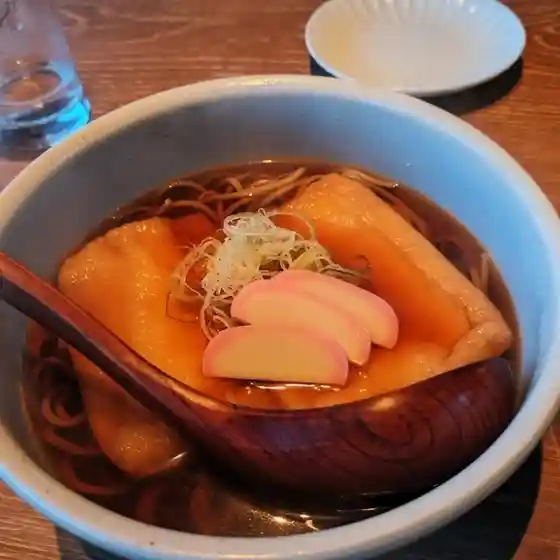
Soba Sake Sumibi Gen Bee
サラダ&デリ
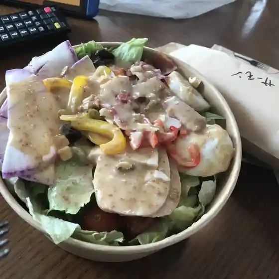
Sarada & Deri
風花
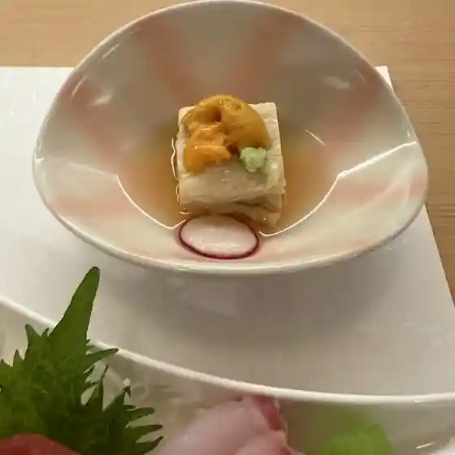
Kazabana
パブ クリケット
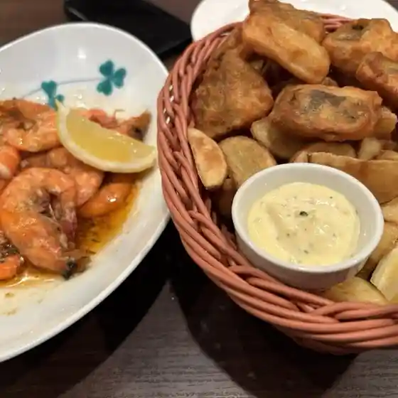
Pabu Kuriketto
カフェ&ペイストリー
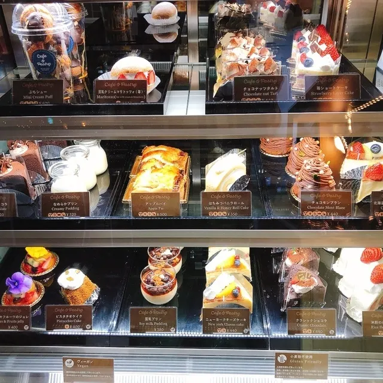
Kafe & Peisutorii
オクトーバーフェスト
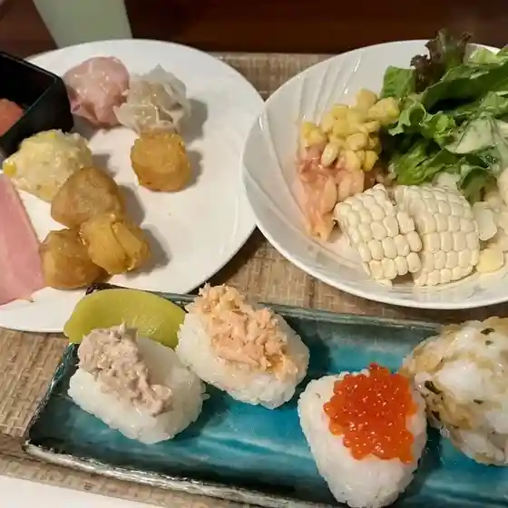
Okutoobaafesuto
ペンション山田
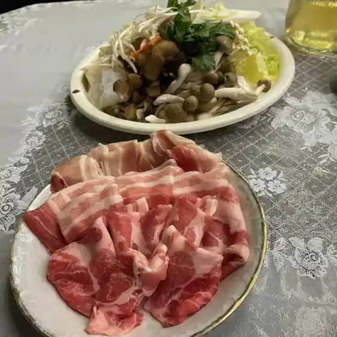
Penshon Yamada
大食堂ホルン
Daishokudou Horun
梅屋
Umeya
道の駅 230 ルスツ
Michi No Eki 230 Rusutsu
バーベキューハウス
Baabekyuuhausu
ルスツ居酒屋 たんぽぽ食堂
Rusutsu Izakaya Tanpopo Shokudou
セイコーマート ようていルスツ店
Seikoomaato Youtei Rusutsu Mise
寿楽荘
Hisashi Raku Sou
THE VALE RUSUTSU
The Vale Rusutsu
もくもく家
Mokumoku Ie
ラ・クー・クロシェット
Ra Kuu Kuroshietto
鮨鉄板とりこ
Sushi Teppan Toriko
スカイビー
Sukaibii
ルスツ ランド アイス
Rusutsu Rando Aisu
まあ～じ
Maa ~ Ji
かつ処 貫気別
Katsu Tokoro Kan Ki Betsu
BOKETTO.
Boketto .
Sights
Rusutsu Resort Ski Area
Rusutsu Resort Ski Area
Rusutsu Resort
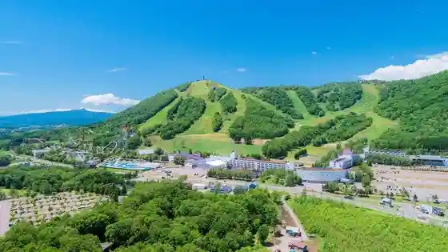
Rusutsu Resort